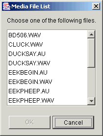

Welcome to the Kisekae Media Player program documentation. The Media Player menu provides a standard drop down list of commands for all media player functions.
The Open command is used to open an existing KiSS media file or any other type of media file recognized by the Kisekae UltraKiss program.
Figure 1 shows a standard Microsoft Windows file Open dialog. The file Open dialog can be used to select any file. If the selected file is of an audio or video type recognized by the Kisekae program then the media file will be opened. If the file is a text playlist file with an LST extension it will also be opened. If the file is not of a type recognized by the program then an error message will be displayed.
Figure 1. Open Dialog
The example in Figure 1 selected the archive file TESTSETC.LZH. When opening archive files, the Media Player will display a selection list of suitable media elements found within the archive. These elements can be audio or video files or playlist files. Figure 2 shows a media selection dialog for the TESTSETC.LZH file.

Figure 2. Media File Selection
Once the media file is selected the file is opened and processed. Figure 3a shows a the Media Player with an audio file loaded. Figure 3b shows the Media Player with a playlist file loaded.

Figure 3a. Media Player Window

Figure 3b. Media Player Playlist
The Close command is used to close the currently active media file or playlist file. If a playlist has been updated or modified the user will be prompted to save the current file. Figure 4 is an example of a close prompt dialog. Canceling the file save will cancel the close request. If a playlist file is to be saved the File-Save As command is invoked. If not, the close operation will continue and all changes are lost.

Figure 4. Close Prompt Dialog
Files loaded from a compressed archive are written to the original archive file from which they were loaded.
The Save command saves playlist elements. KiSS playlist files are, by default, saved to the file directory or compressed archive file from which they were loaded. For example, if a media file was loaded from an archive file then any updated playlist will be written back to this archive file. If the files were loaded from a file directory then the Save operation writes any updated playlist into this directory. When files are saved to a compressed archive then the complete archive file is rewritten, replacing all updated elements in the archive. For files loaded from a directory only the playlist file is written.
The Save operation is performed in the background. Figure 5 shows the file save window that tracks the progress of the file output. The save operation may be cancelled at any time. If an error occurs an appropriate message will be displayed and the save operation will be cancelled. If the save operation is successful the dialog window will be automatically closed.

Figure 5. File Save Window
Note that files are written to temporary files on disk and then renamed to the permanent file name if the save operation is successful. This ensures that backup file copies exist in the event of a program error. The backup file is normally deleted upon completion of a successful save. Backups can be retained permanently if the UltraKiss Keep File Backup program option has been set.
The Save As operation provides a means to save the currently loaded playlist to a new file. If the playlist or media file was loaded from a compressed archive file then the Save As function will write the playlist to a new element in the compressed archive file. If the file was loaded from a file directory then the Save As function will write the element with a new name.
Figure 6 shows a standard Microsoft Windows file Save As dialog. The Media Player Save As dialog will only accept element file names. You cannot change the name of the archive file from which the playlist element was loaded. To change archive file names, use the Archive Manager tool.
The Save operation proceeds as described in the File-Save command.

Figure 6. Save As Dialog
The Queue command initiates a File-Open command. The selected file is added to any active playlist currently in use. If the Media Player is inactive, queuing a file creates a new playlist as shown in Figure 3b and the queued media file begins to play. If the Media Player is active, queuing a new file will create a new playlist if required and add the file to the end of the list.
Media files are played in sequence. When a media file reaches the end of media the next file will start. When the last playlist media file completes the Media Player will enter an inactive state. The playlist will repeat from the first file if the player Loop Playback option is set.
The UltraKiss Media Player requires that all media files in a playlist be loaded from the same file directory or compressed archive file.
The Delete command is used to remove queued entries from an active playlist file. When a playlist as seen in Figure 3b is loaded, the highlighted or selected file can be deleted from the list.
If the selected file is currently playing it will be closed, the playlist entry will be deleted, and the next playlist entry will start.
The Exit command closes any currently media file and terminates the Media Player program execution.
If a playlist file in the Media Player has been updated or modified the user will be prompted to save the current playlist. Figure 4 is an example of a close prompt dialog. Cancelling the save will cancel the exit request. If the current file is saved then the File-Save As command is invoked and the Media Player program terminates upon completion of the save. If changes are not saved they will be lost.
If the Media Player program is terminated by closing the window the Exit command will be automatically invoked. The option to cancel the Exit request will not be available.
This option instructs the Media Player to center the frame in the screen when the media file begins. See the related UltraKiss Center Frame option.
This option instructs the Media Player to repeat the playback of the active media file or play list upon completion of the file. See the related UltraKiss Loop Playback option.
This option instructs the Media Player to minimize itself when an audio media file begins. See the related UltraKiss Minimize Audio option.
This option instructs the Media Player to show video files in a maximized window when the media file begins. See the related UltraKiss Full Screen Video option.
This option instructs the Media Player to maintain the original video aspect ratio if the window is resized. If this option is not set the movie will be scaled to fit within the actual window size. See the related UltraKiss Retain Aspect Ratio option.
The Contents command invokes the Media Player online help system. Access to all product documentation is available. The online help system provides a complete index and navigation system to various topics of interest.
The About command shows a standard program information dialog that provides copyright and program version information. Figure 7 show an example of the Kisekae UltraKiss program About dialog. The program icon image is the Kanji character that represents clothing and the Japanese characters show the Kanji word for paper dolls.

Figure 7. About Dialog
Prior Document: Media Player Introduction
Copyright (c) 2002-2023 William Miles